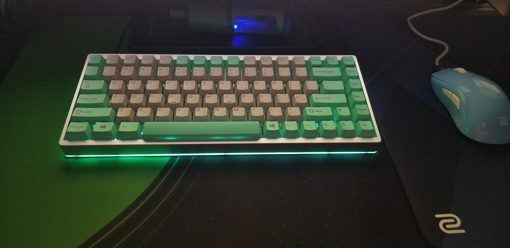

About Me
My name is John Ngan, I've been using the computer since i was 8 years old.
I am at my computer most of my days playing video games. It is natural that I fall in love with the computer and it's peripherals.
I built my first computer when i first entered College. Throughout the years, I have learned so much about the components of a computer such as;
refresh rate of monitors, mousepads, and most importantly mechanical keyboards.
The fact that I am on the computer almost all day I started to become more enthusiastic when it comes to keyboards because, I am typing
most of the time, playing video games or studying. When I got my first mechanical keyboard over cheap rubber domes, it changed my life.
I cannot see myself using cheap rubber domes as a daily driver ever again. Mechanical keyboards feel so much smoother and its more enjoyable to type on.
My Personal Custom Mechanical Keyboard
(It took me about 8hours to build, due to the lubing process and soldering.)
